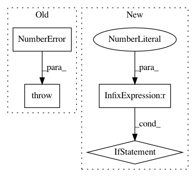

dc0a4f77cd11b1e237b4d96186e799f79065fc98,theanolm/scoring/textscorer.py,TextScorer,compute_perplexity,#TextScorer#Any#,188
Before Change
if numpy.isnan(batch_logprob):
raise NumberError("Log probability of a mini-batch is NaN.")
if numpy.isinf(batch_logprob):
raise NumberError("Log probability of a mini-batch is +/- infinity.")
logprob += batch_logprob
num_words += batch_num_words
After Change
if numpy.isneginf(batch_logprob):
self._debug_log_batch(word_ids, class_ids, membership_probs, mask)
raise NumberError("Probability of a mini-batch is zero.")
if batch_logprob > 0.0:
self._debug_log_batch(word_ids, class_ids, membership_probs, mask)
raise NumberError("Probability of a mini-batch is greater than one.")
logprob += batch_logprob
num_words += batch_num_words
if num_words == 0:
In pattern: SUPERPATTERN
Frequency: 3
Non-data size: 4
Instances
Project Name: senarvi/theanolm
Commit Name: dc0a4f77cd11b1e237b4d96186e799f79065fc98
Time: 2017-07-17
Author: seppo.git@marjaniemi.com
File Name: theanolm/scoring/textscorer.py
Class Name: TextScorer
Method Name: compute_perplexity
Project Name: senarvi/theanolm
Commit Name: dc0a4f77cd11b1e237b4d96186e799f79065fc98
Time: 2017-07-17
Author: seppo.git@marjaniemi.com
File Name: theanolm/scoring/textscorer.py
Class Name: TextScorer
Method Name: score_sequence
Project Name: mathics/Mathics
Commit Name: 8f89d43f1af922d2bd4c1f1e90ffba5aea7b2361
Time: 2016-08-05
Author: 16sn6uv@gmail.com
File Name: mathics/builtin/graphics.py
Class Name: Blend
Method Name: apply